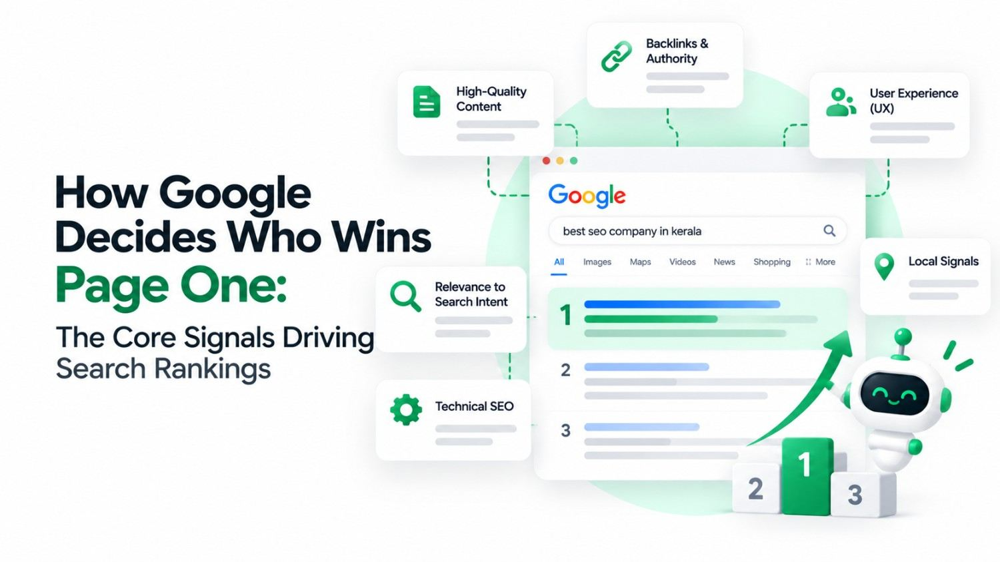

Every time someone types a search query into Google, the algorithm evaluates hundreds of millions of web pages in a fraction of a second and decides which ten results deserve page one. Understanding how Google ranks websites is one of the most valuable things a business owner can learn- because it tells you exactly where to invest your time and budget to grow organically.
Google does not make these decisions randomly. It uses a sophisticated search engine ranking algorithm built around one core question: which page will best answer what this person is actually looking for?
Step One: Google Finds and Reads Your Website
Before Google can rank you, it has to find you
Google uses automated programs called crawlers (or spiders) that continuously browse the web by following links from page to page. When a crawler visits your website, it reads your content and sends that information back to Google's index- essentially a giant library of every page Google has ever discovered.
If your page is not indexed, it cannot rank. This is why having a well-structured site with clean internal links, a proper sitemap, and no technical errors is the non-negotiable foundation of any SEO strategy.
Step Two: Google Matches Pages to Search Intent
Ranking the right page for the right query
Once indexed, Google evaluates whether your page actually answers what the user is searching for. This is called search intent and it is one of the most important concepts in modern SEO.
Someone searching "best SEO company in Kerala" wants a list of options to compare. Someone searching "what is SEO" wants a definition. Google identifies the intent behind a query and only ranks pages that genuinely match it. Publishing a page about the wrong angle of a topic- no matter how well written- will struggle to rank for keywords it does not properly serve.
Practical tip: Before creating any page, search your target keyword in Google and study the top results. The type, format, and depth of those pages tells you exactly what Google wants to see for that query.
The Core Google Ranking Factors
Google's algorithm weighs over 200 SEO ranking factors. Most of them fall into a handful of categories that every business owner should understand:
Content Quality
Helpful, accurate, well-structured content that genuinely answers the searcher's question. Thin or copied content ranks poorly.
Backlinks
Links from other reputable websites signal that your content is trustworthy. Quality matters far more than quantity.
Page Speed
Slow pages frustrate users and are actively penalised by Google. Fast loading is both an SEO and a conversion requirement.
Mobile Optimisation
Google uses mobile-first indexing. If your site does not work well on a phone, your rankings will suffer across all devices.
User Experience
Google tracks how users interact with your page. High bounce rates and short visits send negative ranking signals.
Website Authority
Sites with strong, consistent histories of quality content and ethical link-building earn higher baseline trust from Google.
Content: The Foundation of Rankings
What "good content" actually means to Google
Google evaluates content through a framework it calls E-E-A-T- Experience, Expertise, Authoritativeness, and Trustworthiness. Pages written by credible sources, backed by real-world experience, and structured clearly score higher than generic content produced purely for the sake of publishing.
For your website, this means going beyond surface-level answers. Cover your topic thoroughly, use proper heading structure, answer related questions your audience is likely to have, and keep your information accurate and up to date.
- Use your target keyword naturally in the page title, first paragraph, headings, and throughout the body- without forcing it
- Match the content format to search intent- guides, comparison pages, lists, and FAQs each serve different query types
- Keep content fresh- Google favours pages that are regularly reviewed and updated over outdated information
- Cover related subtopics- comprehensive pages that answer follow-up questions rank above thin pages that only scratch the surface
Backlinks: Google's Measure of Trust
Why other websites linking to you matters so much
A backlink is a link from another website pointing to yours. Google treats each backlink as a vote of confidence- a signal that your content is credible enough for someone else to reference. Pages with more high-quality backlinks from relevant, authoritative sources consistently outrank pages with none.
One link from a respected industry publication or a well-known local website is worth far more than dozens of links from unrelated or low-quality sources. Building backlinks takes time and effort, but it remains one of the highest-impact activities in SEO.
Want to Know How Your Website Currently Ranks?
Our team will audit your site's authority, content, and technical health and show you exactly what is holding your rankings back.
Technical Performance & User Experience
Beyond content and backlinks, Google closely monitors how well your website performs and how users actually behave when they land on it. These Google ranking factors are often overlooked by businesses- but they can be the difference between page one and page two.
| Ranking Factor | What Google Measures | Impact Level |
|---|---|---|
| Page Speed | How fast your pages load on desktop and mobile | Very High |
| Mobile Optimisation | How well the site functions on smartphones | Very High |
| Core Web Vitals | Loading, interactivity, and visual stability scores | High |
| Bounce Rate | Users leaving without engaging- a negative signal | High |
| HTTPS / Security | Whether the site uses a valid SSL certificate | Medium |
| Structured Data | Schema markup that helps Google understand page content | Medium |
How to Rank on Google's First Page
There is no single shortcut to page one- but there is a repeatable process. Here is how business owners can approach it practically:
- Start with keyword research- identify the exact terms your customers are searching and build your content strategy around them
- Fix technical issues first - a slow, broken, or poorly structured site will limit every other effort regardless of content quality
- Create content that fully answers search intent- go deeper than competitors and address every question a visitor might have
- Build backlinks consistently- earn links through guest posts, digital PR, and creating genuinely shareable resources
- Improve your local presence- for local businesses, a fully optimised Google Business Profile is one of the fastest routes to organic visibility
- Monitor and iterate- track rankings, analyse what is working, and keep improving existing pages before always creating new ones
Google ranks websites that genuinely deserve to be there.
The algorithm is sophisticated, but its goal is straightforward- surface the most helpful, trustworthy, and well-performing page for every search. Businesses that invest consistently in quality content, a clean technical foundation, and a strong backlink profile will always win in the long run.
SEO is not about tricking Google. It is about building a website so good that Google has no choice but to rank it.